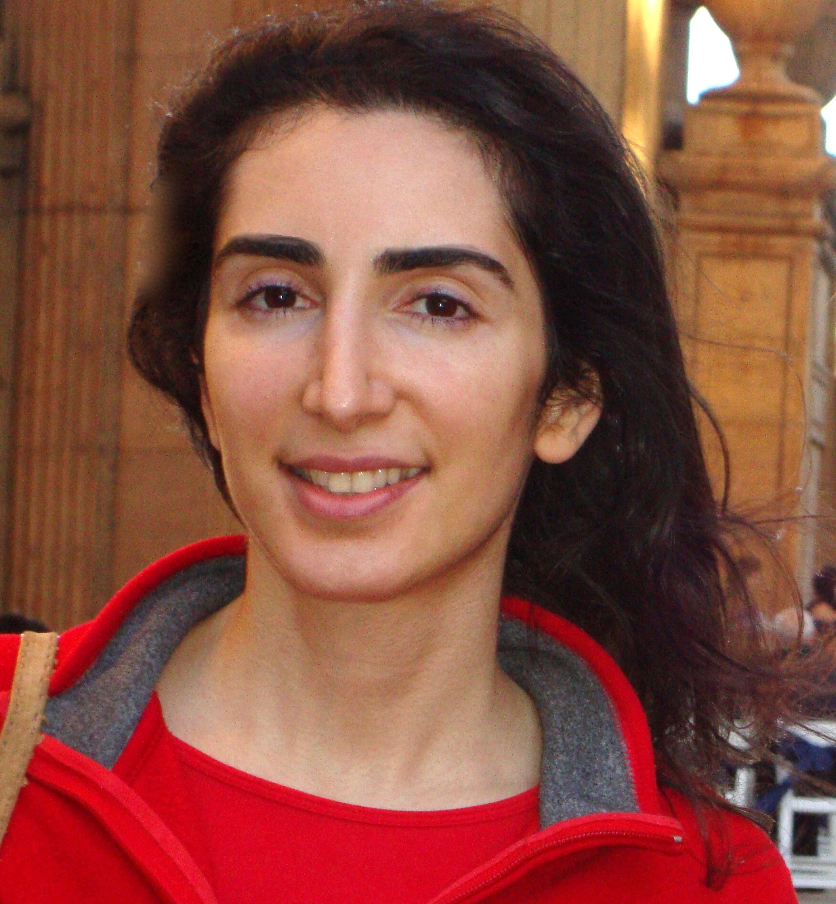

<div class="row flex-column-reverse flex-md-row py-2">
    <div class="col-md-8" id="bio">
        <h1>Mahrang Saeed</h1>
        <p class="text-justify">
            I have a MS in Electrical Engineering with a concentration in AI from San Jose State University. <br>
            Built and trained Logistic Regression, KNN, and Random Forest models, MLPs, and CNNs. <br>
            Trained machine learning models on images, EMG signals, and gas sensor data. <br>
            Evaluated performance of models using Precision, Recall, Accuracy, Confusion Matrix, and ROC curve. <br>
            Built a process manager for Linux to display system, CPU, memory, and processes data. <br>
            Built a custom labeled dataset of door images and trained YOLOv3 on it to detect doors. <br>
            Built projects in C++ and Python.  I have a <a href="https://www.udacity.com/certificate/e/b135d00c-1f79-11ed-92e0-ff09ae4e0d84">C++ Nanodegree</a> from Udacity. 
        </p>        
        <p style="text-align:center">
            <a href="https://www.linkedin.com/in/mahrang">LinkedIn</a> / <a href="https://github.com/mahrang">GitHub</a>
        </p>
    </div>
    <div class="col-md-4" style="z-index:4;">
        
    </div>
</div>

{% include publications.html %}
